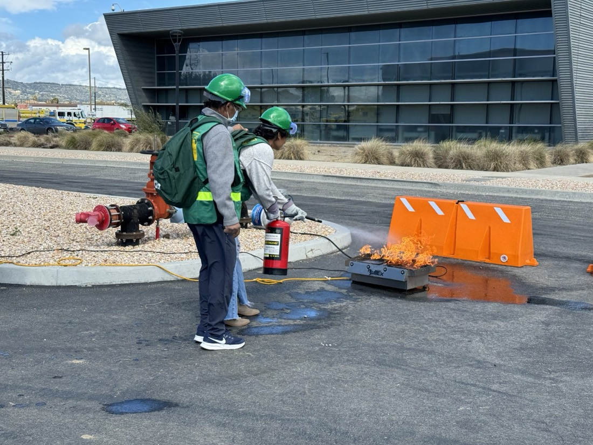
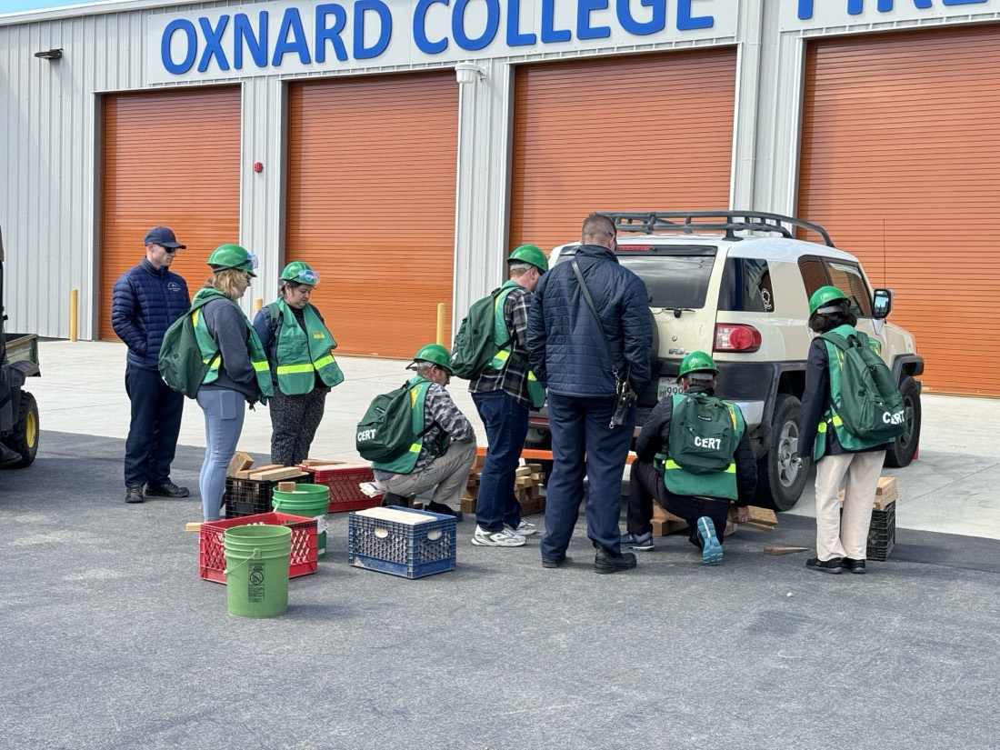
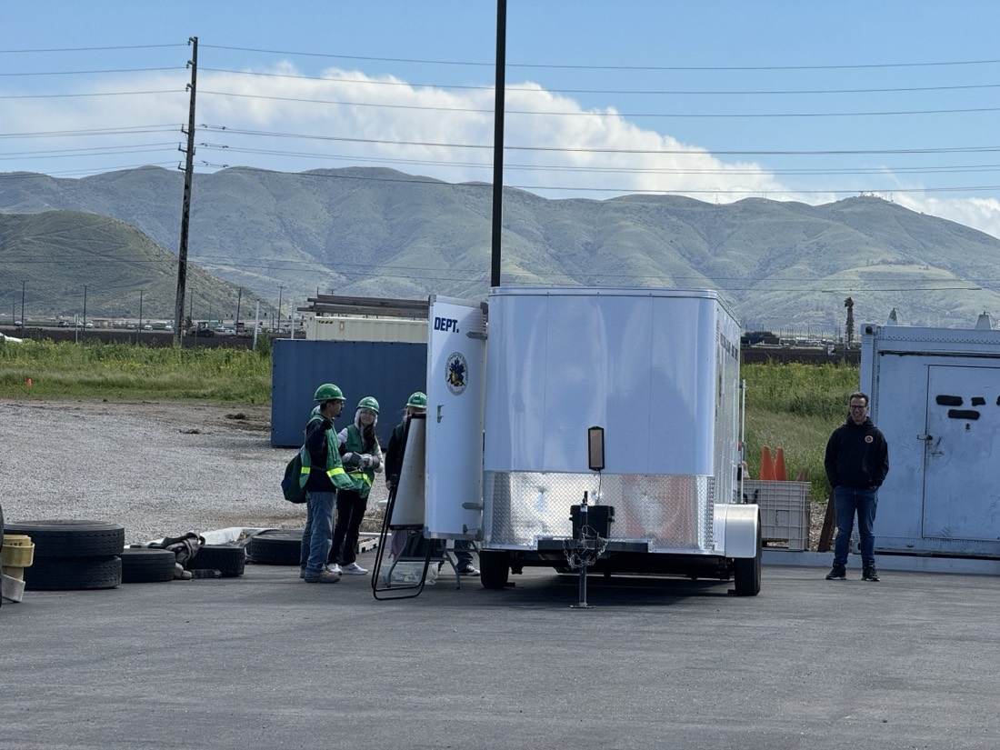
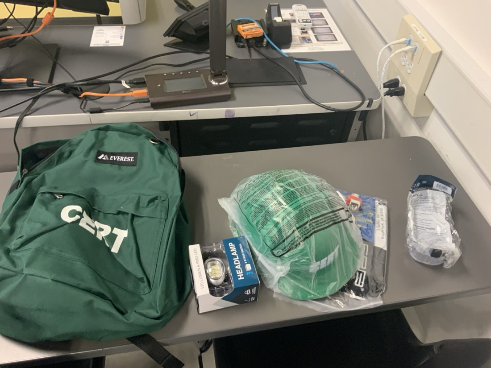
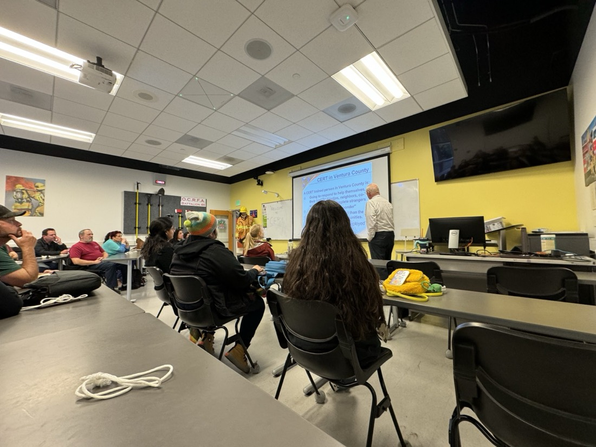
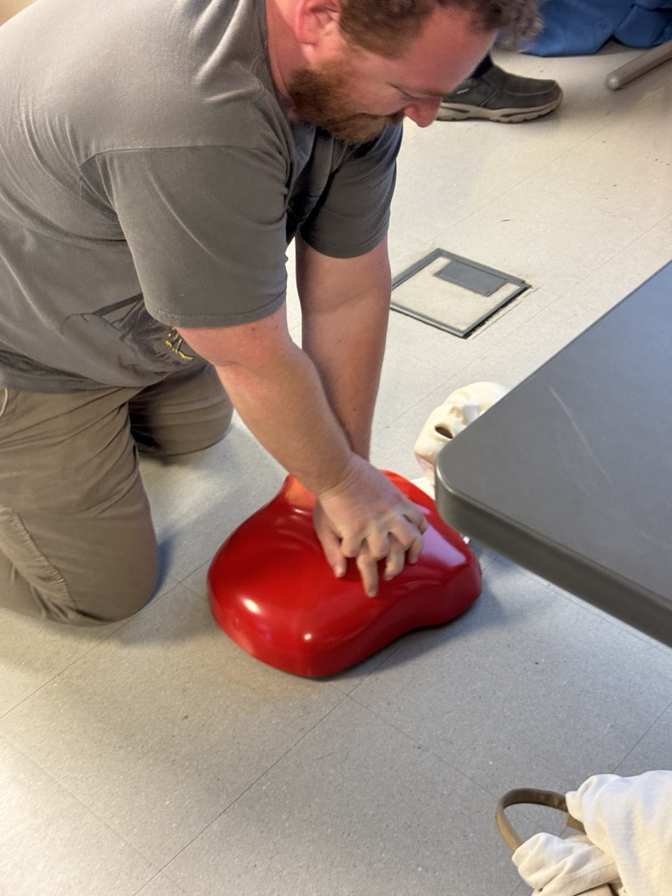
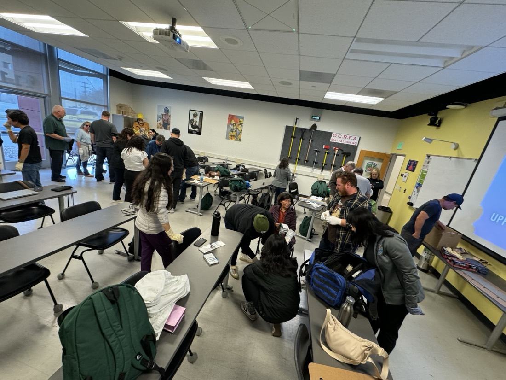
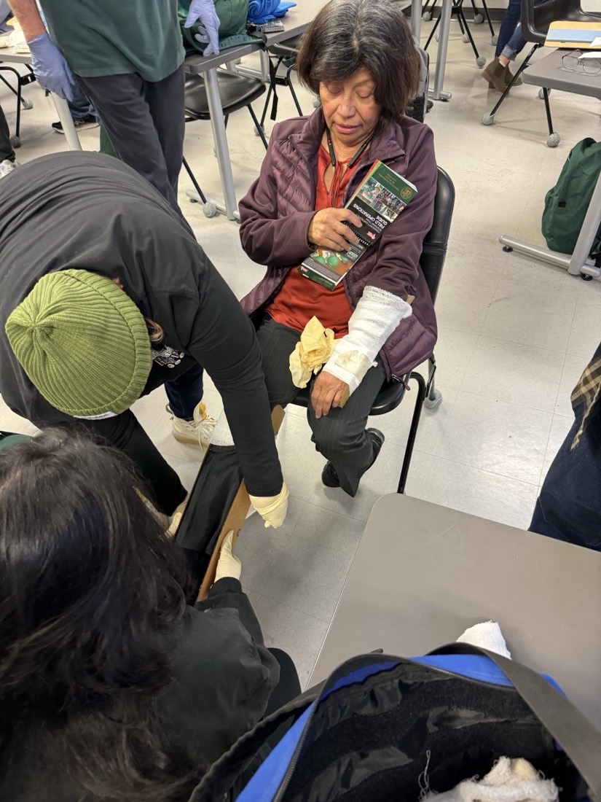

CERT — Community Emergency Response Team Training
From Year 2
Six Friday afternoons, March 1 – April 5, 2024 · Oxnard College Fire Academy, Camarillo · Hosted by the Ventura County Community College District and the Ventura County Fire Department
Program overview
The Community Emergency Response Team (CERT) program, hosted by the Ventura County Community College District in partnership with the Ventura County Fire Department, provides disaster preparedness training for community members. CERT trains volunteers to respond to the emergencies common in Ventura County: wildfires, earthquakes, and floods. The program covers fire safety, team organization, hazard awareness, and medical operations. This cohort met for 18 hours of scheduled class time (six Friday afternoon sessions, 2:00–5:00 p.m., at the Oxnard College Fire Academy in Camarillo), with attendance required at every one. Class work was paired with assigned preparation between sessions: manual chapters to read, and household tasks to carry out: locating gas, water, and electrical shutoffs, establishing an out-of-state contact, and setting up food and water storage. Graduates receive a CERT start-up pack with safety gear and a certificate of completion.
The course closed with a full disaster simulation built from five components: incident command, search and rescue, treatment, heavy lifting, and small fire suppression.
Training curriculum
The program follows the FEMA CERT Basic Training curriculum, which runs as nine units, each on a specific area of disaster response.
| Unit | Topics |
|---|---|
| 1 · Disaster Preparedness | Community preparedness roles and responsibilities · hazards and their potential impact · home and workplace preparedness · reducing hazard impact through mitigation · CERT disaster response · additional training for CERT volunteers |
| 2 · CERT Organization | CERT organization · mobilization · documentation |
| 3 · Disaster Medical Operations, Part 1 | Treating life-threatening conditions · basic first aid care |
| 4 · Disaster Medical Operations, Part 2 | Mass casualty incidents · functions of disaster medical operations · establishing medical treatment areas · conducting head-to-toe assessments · public health considerations |
| 5 · Disaster Psychology | Disaster reactions · self-care and team well-being · working with survivors' emotional responses |
| 6 · Fire Safety and Utility Controls | Fire chemistry · fire size-up considerations · firefighting resources · fire suppression safety · fire and utility hazards · hazardous materials |
| 7 · Light Search and Rescue Operations | Safety during search and rescue · conducting interior and exterior search operations · conducting rescue operations |
| 8 · CERT and Terrorism | Terrorist goals and tactics · preparing your community · active shooter situations · until help arrives · hazmat and CBRNE |
| 9 · Course Review, Final Exam, and Disaster Simulation | Course review · final exam · disaster simulation · exercise critique and summary |
Photographs from the training







